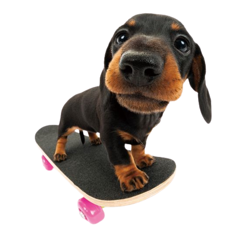
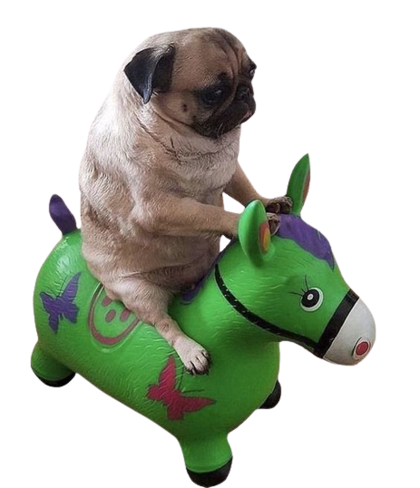

Beagle |
The beagle is a breed of small scent hound, similar in appearance to the much larger foxhound. The beagle was developed primarily for hunting hare known as beagling. Possessing a great sense of smell and superior tracking instincts, the beagle is the primary breed used as a detection dog for prohibited agricultural imports and foodstuffs in quarantine around the world. The beagle is intelligent and is a popular pet due to its size, good temper, and a lack of inherited health problems. |
The famously long, low silhouette, ever-alert expression, and bold, vivacious personality of the Dachshund have made him a superstar of the canine kingdom. Dachshunds come in two sizes and in three coat types of various colors and patterns. It is terribly overworked, but the Dachshund'with his unmistakable long-backed body, little legs, and big personality'is truly an icon of purebred dogdom. Dachshunds can be standard-sized (usually 16 to 32 pounds) or miniature (11 pounds or under), and come in one of three coat types: smooth, wirehaired, or longhaired. |

Dachsund |

Pug |
The Pug is a breed of dog originally from China, with physically distinctive features of a wrinkly, short-muzzled face and curled tail. The breed has a fine, glossy coat that comes in a variety of colors, most often light brown (fawn) or black, and a compact, square body with well developed and thick muscles all over the body. Pugs were brought from China to Europe in the sixteenth century and were popularized in Western Europe by the House of Orange of the Netherlands, and the House of Stuart. In the United Kingdom, in the nineteenth century, Queen Victoria developed a passion for pugs which she passed on to other members of the Royal Family. |
|
|